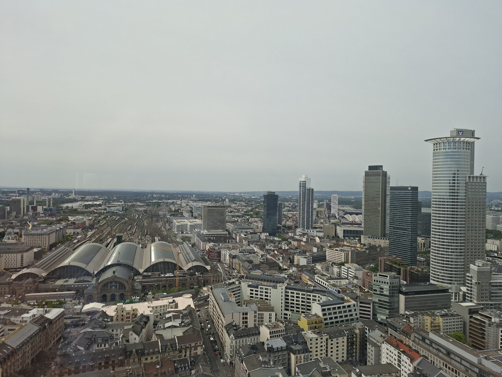

🇩🇪 Frankfurt (Main), Hessen, Deutschland
Der Silberturm

Frankfurts Silberne Ikone
Frankfurts
Silberne Ikone
- Architektur -
Der Silberturm ist ein faszinierendes Beispiel für moderne Hochhausarchitektur, das sowohl ästhetisch als auch funktional überzeugt. Mit seiner markanten Fassade, der klaren geometrischen Form und seiner bedeutenden Rolle im Frankfurter Bankenviertel ist der Silberturm eines der Wahrzeichen der Stadt und ein bedeutender Teil ihrer Skyline.
Der Silberturm ist ein faszinierendes Beispiel für moderne Hochhausarchitektur, das sowohl ästhetisch als auch funktional überzeugt. Mit seiner markanten Fassade, der klaren geometrischen Form und seiner bedeutenden Rolle im Frankfurter Bankenviertel ist der Silberturm eines der Wahrzeichen der Stadt und ein bedeutender Teil ihrer Skyline.
Der Silberturm ist ein faszinierendes Beispiel für moderne Hochhausarchitektur, das sowohl ästhetisch als auch funktional überzeugt. Mit seiner markanten Fassade, der klaren geometrischen Form und seiner bedeutenden Rolle im Frankfurter Bankenviertel ist der Silberturm eines der Wahrzeichen der Stadt und ein bedeutender Teil ihrer Skyline.
- Lage -
Zentral
Der Silberturm zählt zu den bekanntesten Hochhäusern Frankfurts und befindet sich in einer der zentralsten Lagen der Stadt.
Zwischen zwei Welten
Jürgen-Ponto-Platz 1 im Frankfurter Bahnhofsviertel, unmittelbar am Übergang zum Bankenviertel. Damit liegt der Turm inmitten des wirtschaftlichen Zentrums der Mainmetropole und nur wenige Gehminuten vom Hauptbahnhof entfernt.
- Wandel -
Zentral
Der Silberturm zählt zu den bekanntesten Hochhäusern Frankfurts und befindet sich in einer der zentralsten Lagen der Stadt.
Zwischen zwei Welten
Jürgen-Ponto-Platz 1 im Frankfurter Bahnhofsviertel, unmittelbar am Übergang zum Bankenviertel. Damit liegt der Turm inmitten des wirtschaftlichen Zentrums der Mainmetropole und nur wenige Gehminuten vom Hauptbahnhof entfernt.
- Fakten -
Zentral
Der Silberturm zählt zu den bekanntesten Hochhäusern Frankfurts und befindet sich in einer der zentralsten Lagen der Stadt.
Zwischen zwei Welten
Jürgen-Ponto-Platz 1 im Frankfurter Bahnhofsviertel, unmittelbar am Übergang zum Bankenviertel. Damit liegt der Turm inmitten des wirtschaftlichen Zentrums der Mainmetropole und nur wenige Gehminuten vom Hauptbahnhof entfernt.
- Ausblick -
